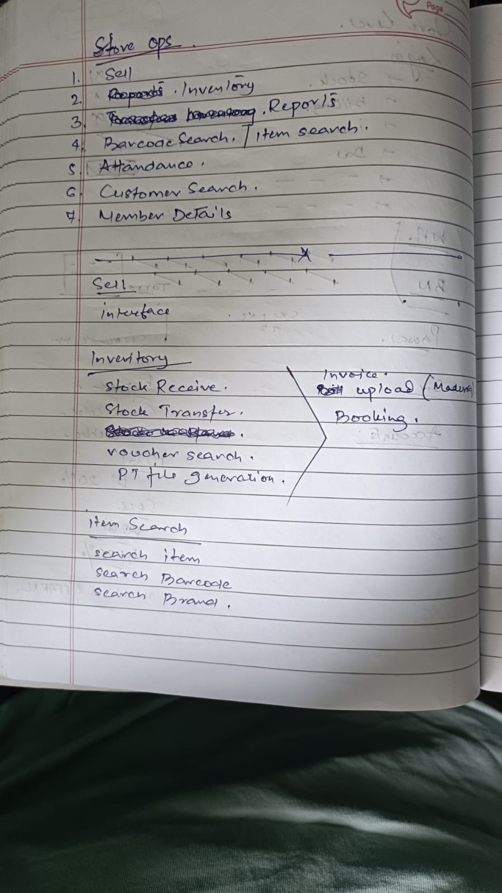
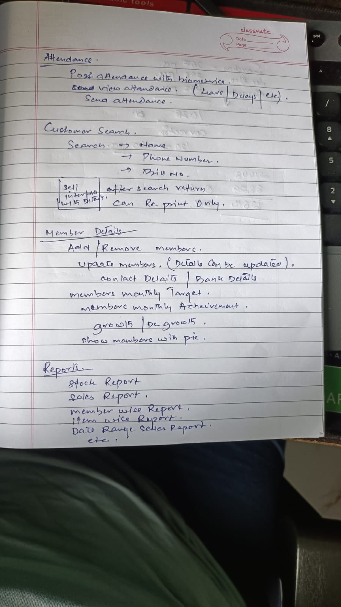

Store Ops notes (25 July) — as received vs what's built / planned
Two handwritten notebook pages listing the seven screens a store expects to work with, and what each screen should do. Transcribed exactly, then checked item by item against the current build and the locked design decisions.
1 · The notes, exactly as received


Store Ops — the seven screens
- Sell
- Inventory (first written "Reports", corrected)
- Reports
- Barcode search / item search
- Attendance
- Customer search
- Member details
Sell
- "Interface" — noted as a heading, detail not written out on these pages.
Inventory
- Stock receive
- Stock transfer
- one line crossed out
- Voucher search
- PT file generation — bracketed with: Invoice upload (Madura), Booking
Item search
- Search item
- Search barcode
- Search brand
Attendance
- Post attendance with biometric
- View attendance (leave, delays, etc.)
- Send attendance
Customer search
- Search by name, phone number, or bill number
- After search, the bill opens in the sell interface with details
- Can re-print only — no editing of a past bill
Member details
- Add / remove members
- Update members — contact details, bank details
- Members' monthly target
- Members' monthly achievement
- Growth / de-growth
- Show members with picture
Reports
- Stock report
- Sales report
- Member-wise report
- Item-wise report
- Date-range sales report
- etc.
What this note is. It reads as a store's-eye map of the daily app — what a store manager and staff expect to open every day. It is a requirements input, not a design. The good news: most of it is either already built or already designed; only two items genuinely fall outside current decisions (staff targets, biometric attendance).
2 · Item by item — where each one stands
| Asked for | Status | Where it stands today |
|---|---|---|
| Sell (screen no. 1) | Not built | Selling / POS is the biggest unbuilt piece. Decision stands: sell through Ten Software first, with our own POS proven at one store, one counter. The stores putting "Sell" first on their list confirms it should be the next major slice. |
| Inventory — stock receive | Built | Goods inward (GRN) is live in the alpha — receiving against a booking, and direct receipt without a booking. |
| Inventory — stock transfer | Built | Scan-based store transfer merged in July (wedge scanner, scan-is-truth). Later transfer slices are still in progress, but the store-side flow exists. |
| Voucher search | Built | The global search shipped this month — one search box in the top bar that finds vouchers, items and barcodes. |
| PT file generation + invoice upload (Madura) | Partly built | The PT-mapper is live for brand PT files (Madura is one of its nine brand profiles). Making a PT for non-brand goods is live too — it merged on 3 July, together with the inbound queue that links a goods receipt to its PT, and auto-pricing. The mapper also learns from operator corrections now. Turning a raw invoice into a PT inside the app is not built — that is still the separate weekly tool. (Corrected 25 July 2026: this row previously said non-brand PT making was sitting on an unmerged branch. It was, in early July; it landed on the 3rd. The branches still on the server are stale copies of merged work.) |
| Booking | Built | The Bookings screen is live in the alpha. |
| Item search — by item, barcode, brand | Built | Covered by the same global search. Barcode behaves per the locked decision: a scan alias, with stock counted under it. |
| Attendance (with biometric) | Deferred | Attendance & payroll was consciously deferred, to revisit before go-live. This note asks for it again, now with a biometric device. That is a decision to make, not a build gap — see below. |
| Customer search → re-print only | Not built | Hangs off the Sell screen, so it comes with the POS slice. The pleasant surprise: the stores themselves wrote "can re-print only" — no editing of a past bill. That is exactly the append-only rule the system is built on. Store expectation and system rule agree. |
| Member details — add / remove / update staff | Built | Landed this week: members are staff, and the store manager keeps them — add, remove and update from the store screen. |
| Member targets, achievement, growth, photo | New ask | Monthly target per staff member, achievement against it, growth versus last month, and a staff photo — none of this exists in the design corpus. It is a small, sensible feature, but it needs a decision on who sets targets and what counts as achievement (bills rung by that member). |
| Reports (stock, sales, member-wise, item-wise, date-range) | Designed, not built | All five are ordinary reads of ledgers the system already keeps (stock ledger, sales once POS exists). The analytics layer design covers them; nothing here contradicts it. Member-wise sales depends on the same "who rung the bill" question as targets above. |
3 · What this changes — two calls to make, one confirmation
Call 1 — Attendance: hold the deferral or pull it forward?
The project decision was to defer attendance & payroll until before go-live. The stores have now asked twice (30 June note, and again here — with a biometric device this time). Options: hold the line, or pull forward a thin attendance-only slice (mark in / mark out, view leaves and delays) and keep payroll deferred. A biometric device is an external with lead time — if it is ever wanted, the spike should start early, like the other externals.
Call 2 — Staff targets and achievement: design it or park it
Targets per member, achievement, growth/de-growth and photos are a genuinely new requirement. It touches two things: the staff record (photo, target — easy) and the sale record (each bill must carry who sold it — that must be decided before the POS slice is designed, or member-wise reporting will never have the data). Recommendation: park the screen, but lock "every sale records the salesperson" into the POS spec now.
Confirmation worth keeping. "After search → re-print only" is the stores independently describing the append-only rule. When POS is specced, quote this note — it is evidence the ground already accepts no-edit-after-billing, which is the rule most likely to face pushback.
4 · One-line summary
Of the seven screens the stores asked for, four are already live, two (Sell and Reports) are designed and waiting on the POS slice, and only two items need a decision — whether to pull attendance forward, and whether to record the salesperson on every bill so staff targets become possible later. Nothing in the note contradicts the design.